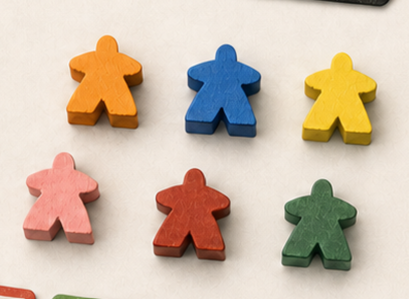

Deprogrammed
These are the humans resisting the aliens. They reveal rooms, complete scenarios and try to overrun the ship. They can also reverse the indoctrination of the opposing side.
ResistUX case study / July 2019 playtest
I watched five groups learn the game from the rulebook across two playtest days. The response gave me confidence to continue, while the manufacturing estimate pointed to the next big design problem.



01 / The game
This is an unnamed competitive sci-fi game from Late Panda. Players wake up on an alien ship and begin on one of two sides. Each side wants control of the ship, while each player has a private goal to complete. I treated the board, cards and tokens as one physical interface: players need to read the state quickly while that state keeps changing.
These are the humans resisting the aliens. They reveal rooms, complete scenarios and try to overrun the ship. They can also reverse the indoctrination of the opposing side.
ResistThese humans believe the aliens are helping. They inspect rooms in private, set traps and try to convert the Deprogrammed players.
Convert02 / How it plays
Players build the board from hexagonal room tiles. Four starting rooms are face up at the beginning.


Each player starts as Indoctrinated or Deprogrammed. They receive a personal goal and take the items printed on that card.


Players move, search and complete scenarios. Along the way they draw Weapon, Health, Companion, Alien Tech and Trap cards.


Players can set and disarm traps, complete room scenarios, use card effects or attack somebody else.


A defeated player removes one morale from their old team, discards their goal and items, then joins the opposing side with a new goal.


Draw an item card. You can then move to an adjacent room, take one action and use a bonus action if you have one, in whichever order makes sense. An item card can also be discarded for its movement value.
A personal win requires two things: completing your own goal and either removing the opposing team or emptying its morale. If your team finishes the game but your goal is incomplete, you haven't personally won.
03 / The playtest
Every participant was new to the game. We gave each group the rulebook and asked them to teach themselves. My partner and I stayed available for questions, and we wrote down every time somebody needed us to clarify a rule. I also asked questions once each game had finished.
13
Participants across three concurrent games. One five-player game and two four-player games.
All 13 said they wanted to play again.
For price, 12 chose £11-£20 and one chose £21-£30.
9
Participants across two concurrent games. One three-player game and one six-player game.
Seven wanted to play again. Two did not.
Seven answered the price question: five chose £11-£20 and two chose £21-£30.
I observed the physical games, used one paper log per game and followed up with questions afterwards. The groups led their own play from the rulebook, while my partner and I answered rules questions and logged each interruption.
I recorded the course of each game, the result and the questions players asked. Looking only at the final score left out most of what I saw at the table.
04 / The game log
Each game had its own sheet. Afterwards, I used it to rebuild the starting position, see when players changed sides and check the final outcome alongside my notes from the table.
TODO: find suitable quote from paper docs or transcripts and insert here later. Why I logged each game
05 / What players told me
“Is this the type of game you see yourself playing again?”
13 of 13 said yes. Everyone in the first session wanted another game.
7 of 9 said yes. Two participants did not want to play again.
What they thought it would cost
I also asked: “How much do you think this game could sell for?” Twenty participants answered this question across the two days.
These answers gave me a price range to work with while I reviewed the production cost. Twenty people answered the question, so I treated it as a useful starting point for the next prototype.
06 / The awkward maths
The estimate on the table is £65,000 for 5,000 units. That works out at £13 per game before distribution is added.
Estimated investment
Units
Cost per unit
Price expectation against cost
At £11, the selling price is lower than the production cost. At £20, only £7 remains before paying for distribution. This made reducing the manufacturing cost part of the design work, not a problem to leave until the end.
The next phase pairs gameplay improvements with a more realistic production plan.
07 / Notes from earlier rounds
I kept the earlier playtest workbook separate from these two playtest days and their pricing answers. Those notes still matter because they describe specific problems people had with the physical game.
One note suggested clearer item-card names or a small guide card. Players needed to recognise each deck and its discard pile without having to ask.
Another note asked for a double-sided marker to show which team controls a room. It needs to be obvious from the other side of the table.
Several records mention questions about receiving trap cards, entering a trapped room and moving past one.
Some two-player games ran long. The notes also mention uneven goal conditions and points where a player couldn't find a useful strategy.
TODO: find suitable quote from paper docs or transcripts and insert here later. How I'm using the earlier notes
08 / What I can claim
The response to the game was encouraging, and the paper logs showed where the rules and physical components slowed people down. I left with clear changes to make and a better way to record the next round.
An online prototype opens the game to a broader group and makes it easier to run sessions at different player counts. A rulebook-only session also gives the revised instructions a proper test without us beside the table.
This was an early test with volunteers, and we answered questions when groups got stuck. That made it useful for finding problems in the rules and preparing a broader, unmoderated round.
09 / What I'm doing next
The paper sheets worked, but comparing five games took time. One structured record per game makes the next round much easier to review.
A free online prototype takes the game beyond a single physical event and helps us find players for later tests.
These groups led their own play with us available for questions. The next group gets the revised rulebook and no live help.
The new log marks team switches and rules discussions as they happen. It also captures any goals left unfinished.
A fresh production estimate gives me something useful to compare with the pricing answers. From there, I can explore publishing or licensing the game.
A free online version makes the next test cheaper and opens it to more people. It also gives the revised rulebook space to stand on its own.
10 / July 2019
The sessions made me want to keep developing the game. I came away knowing which rules to revise, how to improve the next playtest and why the production plan deserves the same attention as the gameplay. The online version gives us space to reach more players and see how the game grows outside a single event.
TODO: find suitable quote from paper docs or transcripts and insert here later. Where I'm leaving it for now
Project notes and source material